Cuando compras por internet, los datos de tu tarjeta viajan cifrados. Muchos de esos sistemas se basan en una idea muy sencilla: multiplicar dos números primos es fácil, pero descubrir qué dos primos se han multiplicado es muy difícil cuando son enormes, de cientos de cifras.
- Calcula \(13 \cdot 17\). ¿Has tardado mucho?
- Ahora al revés: \(391\) es el producto de dos números primos. ¿Cuáles son? ¿Qué te ha costado más?
- ¿Por qué crees que los ordenadores usan primos tan grandes para proteger los mensajes?

Los números primos menores que 30
Eratóstenes, Euclides y otros matemáticos griegos ya estudiaban los números primos hace más de 2 000 años. Hoy siguen siendo uno de los grandes temas de investigación: todavía no sabemos, por ejemplo, si hay infinitas parejas de primos que se diferencian en 2, como 11 y 13 o 41 y 43.